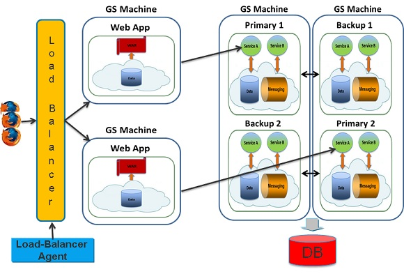

A Web Processing Unit can use Jetty as the web container that actually runs the WAR file deployed on the Service Grid. Jetty is included with the product installation package. The integration allows you to run both a pure WAR file (meaning it does not use a Space), as well as simplifying the introduction of Space (both embedded and remote) in non-Spring and Spring environments.

In order to use this feature, include the
<dependency>
<groupId>org.gigaspaces</groupId>
<artifactId>xap-jetty</artifactId>
<version>[%=Versions.maven-version-MX%]</version>
</dependency>
For more information about dependencies, see Maven Artifacts.
Jetty itself is configured using Spring, and allows you to control all aspects of both the Jetty instance created, and the web application context. Jetty instances can be created (by default) in one of two modes. The first is plain, where a Jetty instance is created for each web processing unit instance running within a GSC. The second is shared, where a single Jetty instance is created and shared between all the different Web Processing Unit instances running on the same Grid Service Container. A custom Jetty instantiation and handling can also be configured.
By default, the instantiation mode is plain. In order to control (at deploy time) which instantiation mode is used, the deploy property jetty.instance can be passed with either the plain value (the default) or the shared value.
In order to configure a custom Jetty configuration, a jetty.pu.xml should be added to META-INF/spring within the WAR file. Both plain and shared mode correspond to a built-in jetty.pu.xml file that exists within the
Plain mode (the simplest and the default mode) creates a Jetty instance for each Web Processing Unit instance (web application). The mode configuration parameters are in the data grid JAR file under org/openspaces/pu/container/jee/jetty/jetty.plain.pu.xml.
Plain mode is simple because the context path that is created for each web application instance is exactly the same. Only the connector (port) that it runs on is different. When working in a virtualized environment, where more than one instance of the same web application can run on the same VM, this requires some thought. The Service Grid allows you to control whether only one instance of the web application runs on a VM, using the max-instances-per-vm option, or even using the max-instances-per-machine option. What fits best depends on the deployment and service requirements of the application.
Even though a new Jetty instance is created for each web application instance that runs within a Grid Service Container (JVM), some resources are still shared between the different Jetty instances, making this instantiation model more lightweight than it first seemed. For example, the thread pool Jetty uses to service requests is shared between all the different Jetty instances.
There are many features that are exposed and can control how plain mode is used. The following is a simple explanation of all the different parts within the jetty.plain.pu.xml.
The jetty.plain.pu.xml has multiple deploy-time properties that can be used to control it, with their respective default values.
<bean id="propertiesConfigurer" class="org.springframework.beans.factory.config.PropertyPlaceholderConfigurer">
<property name="properties">
<props>
<prop key="web.context">/${clusterInfo.name}</prop>
<prop key="web.port">8080</prop>
<prop key="web.sslPort">8443</prop>
<prop key="web.context.classLoader.parentFirst">false</prop>
<prop key="web.context.copyWebDir">false</prop>
<prop key="web.threadPool.minThreads">10</prop>
<prop key="web.threadPool.maxThreads">200</prop>
<prop key="web.threadPool.lowThreads">20</prop>
<prop key="web.selector.maxIdleTime">300000</prop>
<prop key="web.selector.acceptors">2</prop>
<prop key="web.selector.lowResourcesConnections">20000</prop>
<prop key="web.selector.lowResourcesMaxIdleTime">5000</prop>
<prop key="web.selector.forwarded">true</prop>
</props>
</property>
</bean>
All the above properties can be controlled during deployment (or by adding a META-INF/spring/pu.properties file). What they actually control (though very evident from the name) is explained in the following sections.
You can control the size of the data a client can push to the server using the org.eclipse.jetty.server.Request.maxFormContentSize property.
<bean id="port" class="org.openspaces.pu.container.jee.PortGenerator">
<property name="basePort" value="${web.port}" />
<property name="portOffset" value="${clusterInfo.runningNumber}" />
</bean>
<bean id="confidentialPort" class="org.openspaces.pu.container.jee.PortGenerator">
<property name="basePort" value="${web.sslPort}" />
<property name="portOffset" value="${clusterInfo.runningNumber}" />
</bean>
The above XML fragment from the jetty.plain.xml controls the port numbers that are used by the Jetty instance that is started. PortGenerator is a utility class that only exposes itself as the sum of the basePort and portOffset properties. In our case, each instance of a web application that is deployed in plain mode will have a unique port (that starts from 8080 by default). For example, if a web application is deployed with 2 instances, the first instance will start on port 8080, and the second instance will start on port 8081 (regardless of the host).
In this case, if another web application is deployed on the same GSC, the web.port property should be changed (for example, to start from 9090), so there won't be any port clashes between the two web applications. By default, if a port is taken on the same host, the subsequent port will be used with up to 20 retries. To limit the number of retries (for example, to 10 instead of the default 20), you must define a bean named retryPortCount of class Integer and the value as the number of attempts. Setting a value of 1 will allow only one attempt using the basePort and portOffset.
<bean id="retryPortCount" class="java.lang.Integer">
<constructor-arg value="10" />
</bean>
To find out during runtime which port Jetty actually uses, call getServletContext().getAttribute("jetty.port.actual").
<bean id="jettyHolder" class="org.openspaces.pu.container.jee.jetty.SharedJettyHolder">
<constructor-arg ref="jetty" />
</bean>
<bean id="jetty" class="org.eclipse.jetty.server.Server">
<constructor-arg>
<bean class="org.eclipse.jetty.util.thread.QueuedThreadPool">
<property name="minThreads" value="${web.threadPool.minThreads}"/>
<property name="maxThreads" value="${web.threadPool.maxThreads}"/>
</bean>
</constructor-arg>
<property name="connectors">
<list>
<bean class="org.eclipse.jetty.server.ServerConnector">
<constructor-arg name="server" ref="jetty"/>
<constructor-arg name="executor"><null/></constructor-arg>
<constructor-arg name="scheduler"><null/></constructor-arg>
<constructor-arg name="bufferPool"><null/></constructor-arg>
<constructor-arg name="acceptors" value="${web.selector.acceptors}"/>
<constructor-arg name="selectors" value="${web.selector.selectors}"/>
<constructor-arg name="factories">
<list>
<bean class="org.eclipse.jetty.server.HttpConnectionFactory">
<constructor-arg>
<bean class="org.eclipse.jetty.server.HttpConfiguration">
<property name="securePort" ref="confidentialPort"/>
</bean>
</constructor-arg>
</bean>
</list>
</constructor-arg>
<property name="port" ref="port"/>
<property name="name" value="MYCONNECTOR1"/>
<property name="idleTimeout" value="${web.selector.maxIdleTime}"/>
</bean>
</list>
</property>
<property name="handler">
<bean class="org.eclipse.jetty.server.handler.HandlerCollection">
<property name="handlers">
<list>
<bean class="org.eclipse.jetty.server.handler.ContextHandlerCollection"/>
<bean class="org.eclipse.jetty.server.handler.DefaultHandler"/>
</list>
</property>
</bean>
</property>
</bean>
The above shows how the Jetty instance is configured. The Jetty bean is actually the Jetty server configured. Most of the parameters can be controlled using deploy-time properties.
An important aspect here is the SharedThreadPool, which wraps the actual Jetty thread pool used. The SharedThreadPool causes the Jetty thread pool to be shared among all of the Jetty instances created on that specific Grid Service Manager (JVM). In this case, the first web application that is deployed to the GSC controls the thread pool size. Other web applications can't modify the size of the thread pool.
The bean that is actually used (and expected to be defined) within the configuration is the JettyHolder (it must be named JettyHolder). In our case, the JettyHolder used is the PlainJettyHolder, which creates a new instance of Jetty for each instance of the web application.
The connector name can be retrieved from ServletContext with the attribute name jetty.MYCONNECTOR1.port.actual. Connectors ports are saved within ServletContext according to the name, and can be retrieved with the attribute name jetty.[CONNECTOR_NAME].port.actual.
<<bean id="webAppContext" class="org.eclipse.jetty.webapp.WebAppContext">
<property name="contextPath" ref="context" />
<property name="war" value="${jee.deployPath}" />
<property name="tempDirectory" value="${jee.deployPath}/WEB-INF/work" />
<property name="copyWebDir" value="${web.context.copyWebDir}" />
<property name="parentLoaderPriority" value="${web.context.classLoader.parentFirst}" />
<property name="configurationClasses">
<list>
<value>org.eclipse.jetty.webapp.WebInfConfiguration</value>
<value>org.eclipse.jetty.webapp.WebXmlConfiguration</value>
<value>org.eclipse.jetty.webapp.MetaInfConfiguration</value>
<value>org.eclipse.jetty.webapp.FragmentConfiguration</value>
<value>org.eclipse.jetty.plus.webapp.EnvConfiguration</value>
<value>org.eclipse.jetty.plus.webapp.PlusConfiguration</value>
<value>org.eclipse.jetty.webapp.JettyWebXmlConfiguration</value>
<value>org.eclipse.jetty.webapp.TagLibConfiguration</value>
</list>
</property>
</bean>
This bean controls the actual web context that corresponds to the web application instance being deployed. Its context path is the property web.context, which defaults to clusterInfo.name (the clusterInfo.name is the name of the Processing Unit and by default takes the WAR file name, but this can be overridden using the override-name feature).
In plain mode, the context path can be the same for all different instances of the web application, even if they are running on the same GSC (JVM).
If you are using Maven to create, compile, package and run unit tests, or to execute and deploy a Processing Unit that is a web application, make sure that inside your WAR file there are no Jetty JARs. In your project pom.xml, exclude jetty-all inside the com.gigaspaces dependency.
For example:
<dependency>
<groupId>org.gigaspaces</groupId>
<artifactId>xap-openspaces</artifactId>
<version>[%=Versions.maven-version-MX%]</version>
<exclusions>
<exclusion>
<groupId>org.eclipse.jetty.aggregate</groupId>
<artifactId>jetty-all</artifactId>
</exclusion>
<exclusions>
</dependency>
The following deployment scenario examples show how plain mode works. Assume we have a web application packaged as WAR, called petclinic. 4 GSCs are started, 2 on each machine. We then deploy 4 instances of the petclinic application.
The end result of the deployment is 4 instances, 1 instance per GSC. The first instance is on a GSC using port 8080, and with a web context path of petclinic. The second instance runs on another GSC with port 8081 and a web context path of petclinic. The third instance runs on yet another GSC, with port 8082 and a web context path of petclinic. The last instance runs on the last GSC, with port 8083 and a web context path of petclinic.
Now, lets assume that the first machine fails. This means that the first 2 web applications (8080 and 8081) are no longer running. The end result of this failure is that the 2 web application instances running on the machine that failed (each on its own GSC), are deployed on the existing machine (assuming no SLA is defined). One of the GSCs on the machine that is still up will run on port 8080, and the other will run on port 8081. As you can see, the port number correlates to the instance number of the web application, and not to a specific location.
Shared mode creates a single Jetty instance per GSC (JVM). The mode configuration parameters are in the data grid JAR file, under org/openspaces/pu/container/jee/jetty/jetty.shared.pu.xml. The benefits of this mode are obvious as only one instance of Jetty is created per JVM (plain mode also shares some resources between different Jetty instances).
The main difficulties when working with this mode are due to the possibility of more than one web application instance running on the same GSC (JVM). In order to solve this problem, by default when working in shared mode, the web context path is the actual web context, appended by a running number. For example, when deploying 2 instances of the petclinic web application, the first instance is deployed under petclinic_1 web app context, while the second is deployed under petclinic_2.
The Service Grid allows you to configure the environment so that only a single instance of a web application is deployed on a GSC, using the max-instances-per-vm parameter. In this case, the default behavior of appending a running number to the context is not needed, and can be disabled by changing the deploy time property web.context.unique to true.
There are many features that are exposed and can control how shared mode can be used. The following is an explanation of the properties in the jetty.shared.pu.xml.
The first part of the jetty.shared.pu.xml is the different deploy-time properties that can be used to control it, with their respective default values.
<bean id="propertiesConfigurer" class="org.springframework.beans.factory.config.PropertyPlaceholderConfigurer">
<property name="properties">
<props>
<prop key="web.context">/${clusterInfo.name}</prop>
<prop key="web.context.unique">true</prop>
<prop key="web.context.separator">_</prop>
<prop key="web.context.copyWebDir">false</prop>
<prop key="web.context.classLoader.parentFirst">false</prop>
<prop key="web.port">8080</prop>
<prop key="web.sslPort">8443</prop>
<prop key="web.threadPool.minThreads">10</prop>
<prop key="web.threadPool.maxThreads">200</prop>
<prop key="web.threadPool.lowThreads">20</prop>
<prop key="web.selector.maxIdleTime">300000</prop>
<prop key="web.selector.acceptors">2</prop>
<prop key="web.selector.lowResourcesConnections">20000</prop>
<prop key="web.selector.lowResourcesMaxIdleTime">5000</prop>
<prop key="web.selector.forwarded">true</prop>
</props>
</property>
</bean>
All the above properties can be controlled during deployment (or by adding a META-INF/spring/pu.properties file). What they actually control (though very evident from the name) will be explained in the following sections.
<bean id="port" class="org.openspaces.pu.container.jee.PortGenerator">
<property name="basePort" value="${web.port}" />
</bean>
<bean id="confidentialPort" class="org.openspaces.pu.container.jee.PortGenerator">
<property name="basePort" value="${web.sslPort}" />
</bean>
Shared mode starts a single Jetty instance, so the port numbers are not based on the instance of the web application, but on the web.port deployment property (which defaults to 8080). The first web application that is deployed in a GSC controls on which port number the shared Jetty instance is created. Other web applications deployed on the same GSC have no affect on the GSC (or on any other aspect of the Jetty server).
If more than one GSC is running on the same machine, and a web application is deployed on both, the first will use port 8080. The second web application instance, deployed on the second GSC, will try to use port 8080, identify that it already in use, and automatically try the next one, which is 8081. By default, if a port is taken on the same host, the subsequent port is used with up to 20 retries. To limit the number of retries (for example, to 10 instead of the default 20), you must define a bean named retryPortCount of class Integer and the value as the number of attempts. Setting a value of 1 will allow only one attempt using the basePort and portOffset.
<bean id="retryPortCount" class="java.lang.Integer">
<constructor-arg value="10" />
</bean>
<bean id="jettyHolder" class="org.openspaces.pu.container.jee.jetty.SharedJettyHolder">
<constructor-arg ref="jetty" />
</bean>
<bean id="jetty" class="org.eclipse.jetty.server.Server">
<constructor-arg>
<bean class="org.eclipse.jetty.util.thread.QueuedThreadPool">
<property name="minThreads" value="${web.threadPool.minThreads}"/>
<property name="maxThreads" value="${web.threadPool.maxThreads}"/>
</bean>
</constructor-arg>
<property name="connectors">
<list>
<bean class="org.eclipse.jetty.server.ServerConnector">
<constructor-arg name="server" ref="jetty"/>
<constructor-arg name="executor"><null/></constructor-arg>
<constructor-arg name="scheduler"><null/></constructor-arg>
<constructor-arg name="bufferPool"><null/></constructor-arg>
<constructor-arg name="acceptors" value="${web.selector.acceptors}"/>
<constructor-arg name="selectors" value="${web.selector.selectors}"/>
<constructor-arg name="factories">
<list>
<bean class="org.eclipse.jetty.server.HttpConnectionFactory">
<constructor-arg>
<bean class="org.eclipse.jetty.server.HttpConfiguration">
<property name="securePort" ref="confidentialPort"/>
</bean>
</constructor-arg>
</bean>
</list>
</constructor-arg>
<property name="port" ref="port"/>
<property name="name" value="MYCONNECTOR1"/>
<property name="idleTimeout" value="${web.selector.maxIdleTime}"/>
</bean>
</list>
</property>
<property name="handler">
<bean class="org.eclipse.jetty.server.handler.HandlerCollection">
<property name="handlers">
<list>
<bean class="org.eclipse.jetty.server.handler.ContextHandlerCollection"/>
<bean class="org.eclipse.jetty.server.handler.DefaultHandler"/>
</list>
</property>
</bean>
</property>
</bean>
The above shows how the Jetty instance is configured. The Jetty bean is actually the Jetty server configured. Most of the parameters can be controlled using deploy-time properties.
The connector name can be retrieved from ServletContext with the attribute name jetty.MYCONNECTOR1.port.actual. Connectors ports are saved within ServletContext according to the name, and can be retrieved with the attribute name jetty.[CONNECTOR_NAME].port.actual.
The bean that is used (and expected to be defined) within the configuration is the JettyHolder (it must be named JettyHolder). In our case, the JettyHolder used is the SharedJettyHolder, which creates a single instance of Jetty on the GSC (JVM) level.
This means that the first deployed web application in shared mode controls how the Jetty instance is created.
<bean id="context" class="org.openspaces.pu.container.jee.SharedContextFactory">
<property name="context" value="${web.context}" />
<property name="unique" value="${web.context.unique}" />
<property name="separator" value="${web.context.separator}" />
</bean>
<bean id="webAppContext" class="org.eclipse.jetty.webapp.WebAppContext">
<property name="contextPath" ref="context"/>
<property name="war" value="${jee.deployPath}"/>
<property name="tempDirectory" value="${jee.deployPath}/WEB-INF/work"/>
<property name="copyWebDir" value="${web.context.copyWebDir}"/>
<property name="parentLoaderPriority" value="${web.context.classLoader.parentFirst}"/>
<property name="configurationClasses">
<list>
<value>org.eclipse.jetty.webapp.WebInfConfiguration</value>
<value>org.eclipse.jetty.webapp.WebXmlConfiguration</value>
<value>org.eclipse.jetty.webapp.MetaInfConfiguration</value>
<value>org.eclipse.jetty.webapp.FragmentConfiguration</value>
<value>org.eclipse.jetty.plus.webapp.EnvConfiguration</value>
<value>org.eclipse.jetty.plus.webapp.PlusConfiguration</value>
<value>org.eclipse.jetty.webapp.JettyWebXmlConfiguration</value>
<value>org.eclipse.jetty.annotations.AnnotationConfiguration</value>
</list>
</property>
<property name="sessionHandler" ref="secureSessionHandler"/>
</bean>
This webAppContext bean controls the actual web context that corresponds to the web application instance being deployed. Its context path is controlled by the context bean, represented by the SharedContextFactory class.
The SharedContextFactory controls the web application context path under which the web application instance is deployed. If the unique flag is set to true, it uses the context path passed, appends the separator, and then appends the web application instance number (the cluster info running number). If the unique flag is set to false, it uses the context passed.
The context passes to the SharedContextFactory, is the property web.context, which defaults to clusterInfo.name (the clusterInfo.name is the name of the Processing Unit and by default uses the WAR file name, but it can be overridden using the override-name feature).
This section explains how to configure plain mode with Apache and mod_proxy load balancer. Plain mode is used in the example. The first step after installing Apache 2.2 is to enable the mod_proxy, mod_proxy_balancer, and mod_proxy_http (at least) modules.
The second step (as per the link to Jetty documentation) is to set the workerName property of the session ID manager. The Jetty integration automatically sets the workerName (if it is not set explicitly) as the clusterInfo name and the clusterInfo running number. You can override this by configuring the jetty-web.xml. The following examples shows how the jetty-web.xml workerName gets set automatically (if it was configured explicitly):
<Configure class="oorg.eclipse.jetty.webapp.WebAppContext">
<Get name="sessionHandler">
<Get name="sessionManager">
<Call name="setIdManager">
<Arg>
<New class="org.eclipse.jetty.server.session.HashSessionIdManager">
<Set name="WorkerName">${clusterInfo.name}${clusterInfo.runningNumberOffset1}</Set>
</New>
</Arg>
</Call>
</Get>
</Get>
</Configure>
Then, the Apache httpd.conf should be modified to enable load balancing, as shown in the following example:
ProxyPass /balancer !
ProxyPass /petclinic balancer://petclinic_cluster/ stickysession=JSESSIONID nofailover=On
<Proxy balancer://petclinic_cluster>
BalancerMember http://machine1:8080/petclinic route=petclinic1
BalancerMember http://machine1:8081/petclinic route=petclinic2
BalancerMember http://machine2:8080/petclinic route=petclinic1
BalancerMember http://machine2:8081/petclinic route=petclinic2
</Proxy>
# Proxy Management
<Location /balancer>
SetHandler balancer-manager
Order Deny,Allow
Deny from all
Allow from all
</Location>
ProxyStatus On
<Location /status>
SetHandler server-status
Order Deny,Allow
Deny from all
Allow from all
</Location>
The above configuration configures the load balancer to direct traffic to /petclinic on machine1 and machine2. On both machines, the ports used are 8080 and 8081. This is because of the dynamic nature of the service grid, where web application instance number 1 (which corresponds to port 8080) might be deployed on machine1 or machine2.
The above provides an overview of how to configure the Apache load balancer by hand. The data grid includes a built-in Apache Load Balancer Agent that provides a dynamic update of Apache, based on changes occurring in the deployment of the web application.
Web applications running inside the Jetty container can use SSL. The following example defines the SSLConnector:
<bean id="sslHttpConfig" class="org.eclipse.jetty.server.HttpConfiguration">
<constructor-arg ref="httpConfig"/>
<property name="customizers">
<list>
<bean class="org.eclipse.jetty.server.SecureRequestCustomizer"/>
</list>
</property>
</bean>
<bean id="sslContextFactory" class="org.eclipse.jetty.util.ssl.SslContextFactory">
<property name="keyStorePath" value="/path-to/keystore"/>
<property name="keyStorePassword" value="storepass"/>
<property name="keyManagerPassword" value="keypass"/>
<property name="trustStorePath" value="/path-to/keystore"/>
<property name="trustStorePassword" value="storepass"/>
</bean>
<property name="connectors">
<list>
<bean class="org.eclipse.jetty.server.ServerConnector">
<constructor-arg name="server" ref="jetty"/>
<constructor-arg name="factories">
<list>
<bean class="org.eclipse.jetty.server.SslConnectionFactory">
<constructor-arg index="0" ref="sslContextFactory" />
<constructor-arg index="1" type="java.lang.String">
<value>http/1.1</value>
</constructor-arg>
</bean>
<bean class="org.eclipse.jetty.server.HttpConnectionFactory">
<constructor-arg name="config" ref="sslHttpConfig"/>
</bean>
</list>
</constructor-arg>
<property name="port" value="8444"/>
<property name="idleTimeout" value="${web.selector.maxIdleTime}"/>
</bean>
</list>
</property>
You can find a complete Jetty container definition here and the associated properties file here.
Jetty documentation outlines all the steps involved in configuring SSL. Please refer to the following page for more information.
A complete example with a keystore and certificate file included is available here.
Security realms allow you to secure your web applications against unauthorized access. Protection is based on authentication that identifies who is requesting access to the web application, and access control that restricts what can be accessed and how it is accessed within the web application.
Jetty supports the following security realms:
Jetty documentation provides more information about security realms and how to configure them. Refer to the Security Realms and Security Realms Tutorial pages for more details.
The attached example shows a web processing unit configured to use HashLoginService. This uses a security realm file for storing the credentials (user ID and passwords) that are used to authenticate users. Roles authorized for the application are defined in the web.xml file.
Your Jetty configuration should include a SecurityHandler configuration (HashLoginService), as shown in the following example:
<property name="securityHandler">
<bean class="org.eclipse.jetty.security.ConstraintSecurityHandler">
<property name="loginService">
<bean class="org.eclipse.jetty.security.HashLoginService">
<property name="name" value="MyRealm"/>
<property name="config" value="${jee.deployPath}/WEB-INF/realm.properties"/>
<property name="refreshInterval" value="60"/>
</bean>
</property>
</bean>
</property>
The web.xml file should include security-constraint, login-config and roles.
The attached example shows a web processing unit configured to use JAASLoginService and a custom login module. Authentication requests are passed to the login module, whose behavior can be customized to suit the specific needs of the web application. In this simplistic example, any request with a password of "password" goes through successfully.
Jetty configuration should include SecurityHandler configuration (JAASLoginService), as shown in the following example:
<property name="securityHandler">
<bean class="org.eclipse.jetty.security.ConstraintSecurityHandler">
<property name="loginService">
<bean class="org.eclipse.jetty.plus.jaas.JAASLoginService">
<property name="name" value="${aas.realm.name}" />
<property name="loginModuleName" value="AASLogin" />
<property name="callbackHandlerClass"
value="org.eclipse.jetty.plus.jaas.callback.DefaultCallbackHandler" />
</bean>
</property>
</bean>
</property>
Login module definition is a configuration file that maps the module name to a Java class implementation, as shown in the following example:
AASLogin {
com.gigaspaces.web.jaas.MySecurityModule required
debug="true" file="/realm.properties";
};
The above configuration file should be passed as a JVM system property, java.security.auth.login.config for all the GSCs that host the web application instances (-Djava.security.auth.login.config=\Dev\webapp-jaas\config\login.config).